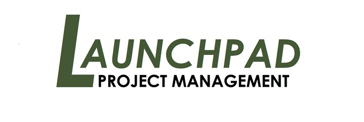

Onshape by PTC
R&D Strategy Analyst Intern
June 2025 - Aug 2025
• Built and evaluated multiple unsupervised anomaly detection models (Prophet + Isolation Forest, Merlion, LSTM-AE) for API telemetry monitoring; selected and deployed Prophet-based pipeline for best performance, interpretability, and ease of deployment.
• Applied AWS Bedrock’s Titan Embeddings and Claude 3.5 Sonnet for clustering, naming, and sentiment analysis of NPS feedback, extracting key themes to support product insights from unstructured text.
• Conducted keyword analysis on AI Advisor open-field queries to assess reference URL coverage, uncover content gaps, and improve user-facing query resolution.
• Developed Looker dashboards to track anomaly alerts and AI-driven insights, enhancing visibility across teams and automating Slack-based reporting to reduce manual monitoring efforts.
Pinecone
Data Science Intern
June 2024 - Aug 2024
• Designed and built the Book of Business and Account 360 dashboards using SQL and Sigma, improving sales operations by 15%. Implemented Row-Level Security (RLS) for tailored views, and documented processes in Notion, reducing onboarding time by 30% and ensuring consistent use across teams.
• Developed the "dim_assistants" schema and implemented it in the pipeline using BigQuery and DBT. Created the Pinecone Assistant dashboard using SQL and Sigma, enabling comprehensive tracking of metrics. Facilitated cross-team collaboration, leading to a 25% increase in product insights.
• Conducted churn analysis using Python, identifying 5 key metrics and setting up alerts, reducing churn by 10%. Overcame data limitations and improved data collection, projected to boost accuracy by 20%.
Allschool Inc.
Data Analyst Intern
June 2022 - Aug 2022
• Utilized Google Analytics for a data-driven analysis of regional and platform-specific user traffic and revenue, leading to optimized impressions targeting and increased customer engagement.
• Leveraged Python and the Selenium package to design a real-time web scraper, providing centralized class schedules and accelerating the selection process by 50%.
• Employed SQL and BI tools to evaluate user behavior across multiple advertising channels, informing strategic decision-making and resulting in a 15% reduction in project budget and an increase in daily active users.
• Contributed to the development of a key metrics dashboard highlighting active users, daily traffic, and revenue, thereby improving business visibility and supporting data-driven decision making.
UC Davis Economics
Research Assistant
Jul 2020 - Sep 2020

• Utilized generalized linear model (GLM) and Logistic Regression to analyze behavioral trends in procrastination and present-biased behavior in a study in collaboration with Professor Anujit Chakraborty.
• Enhanced the reliability of study results by employing Bootstrapping resampling techniques to expand the sample size to approximately 20,000 data points.
• Improved prediction accuracy of procrastination behavior within the test dataset by addressing multicollinearity among predictor variables using Lasso Regression.
• Facilitated industry application by uncovering procrastination patterns, offering insights for tech companies to develop user-centric products and services, potentially enhancing user satisfaction, retention, and success.
Launchpad Project Management
Data Analyst Intern
Jun 2019 - Sep 2019

• Utilized R and SQL for comprehensive market analysis and database management across multiple portfolios, including enabling the development of a predictive model for real estate investment strategies.
• Applied machine learning algorithms and statistical methods like generalized linear regression and logistic regression to analyze survey data, extracting critical insights for the portfolios.
• Employed advanced data visualization tools like Tableau to present data analysis results, facilitating strategic decision-making and enhancing team understanding.